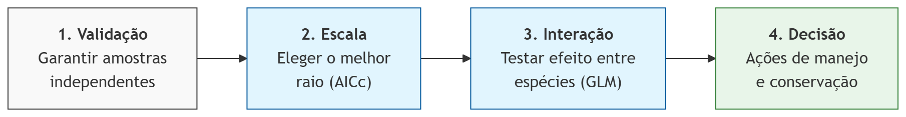
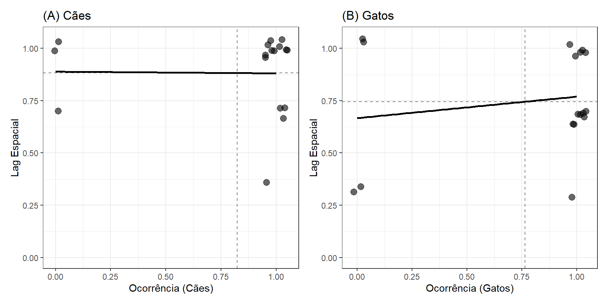
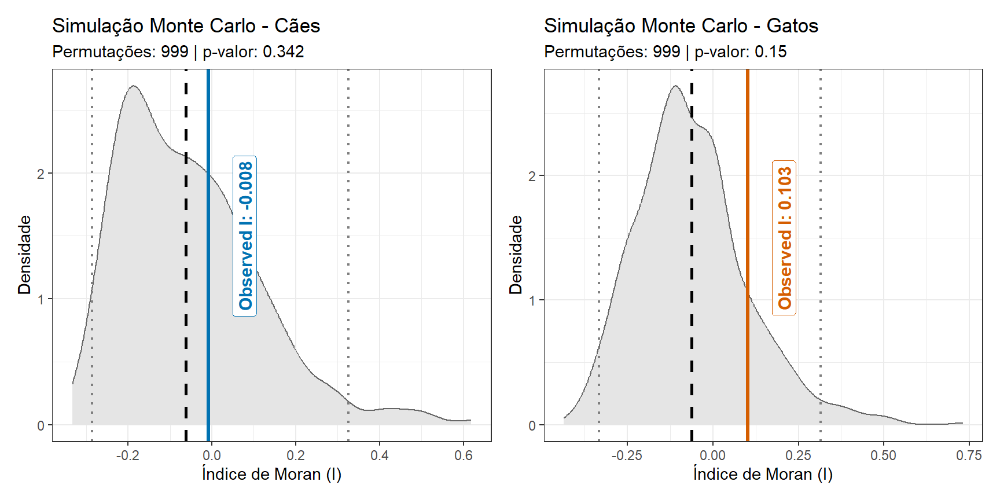
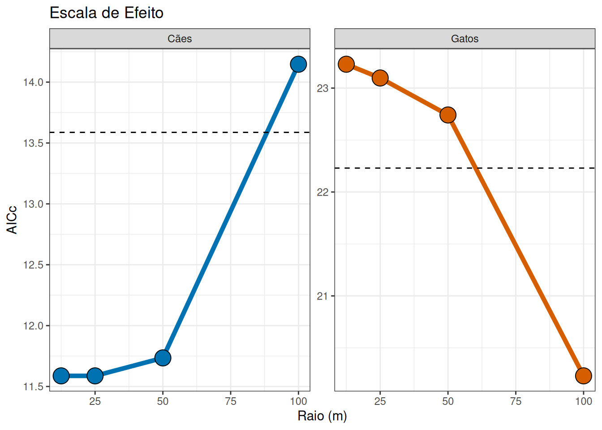
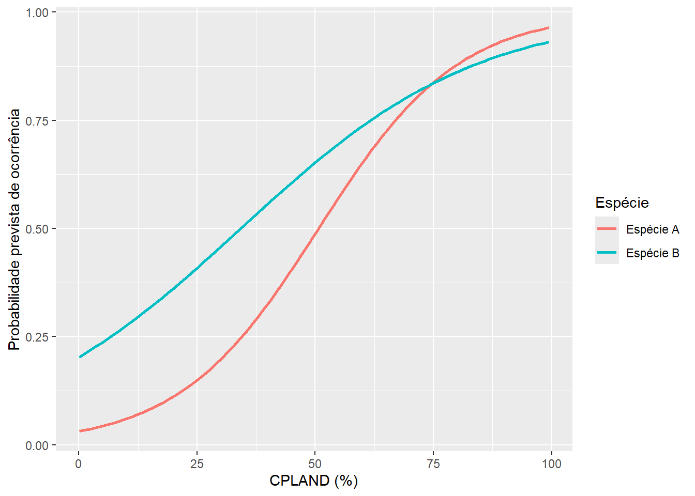
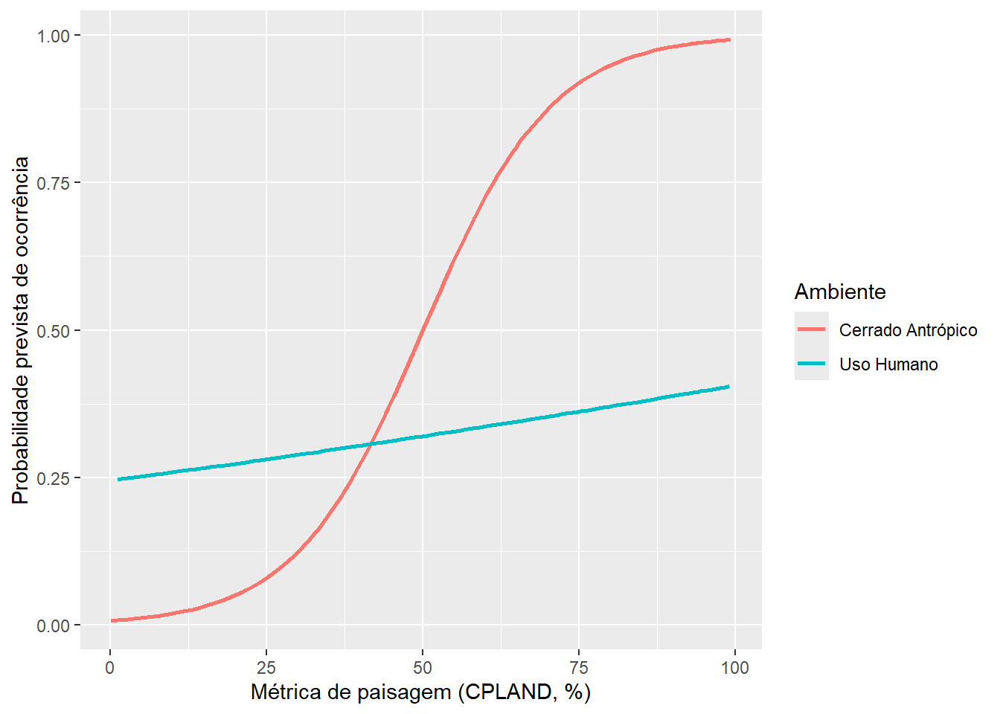
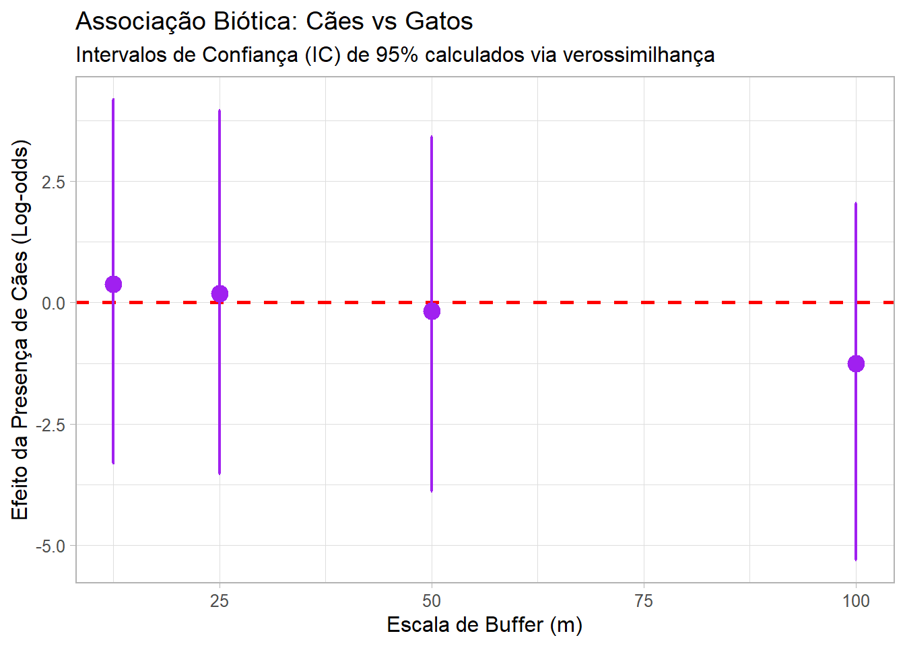

3 Escala de Efeito na Ocorrência de Fauna Doméstica
CuidadoCapítulo em Desenvolvimento
⚠️ Aviso:
Este capítulo é um trabalho em andamento. Os exemplos de código e o texto ainda estão sendo refinados. Você pode encontrar alguns espaços em branco, rascunhos, erros gramaticais, mas estou trabalhando ativamente para finalizá-lo. Feedbacks e sugestões são sempre bem-vindos!
3.1 Introdução
A ecologia de paisagens urbana investiga como a configuração e a composição do habitat influenciam a biodiversidade. No contexto amazônico, áreas como o Campus Marco Zero da UNIFAP (Macapá, Brasil) representam mosaicos complexos onde a fauna doméstica (Canis familiaris e Felis catus) interage com fragmentos remanescentes de cerrado.
Um conceito central aqui é a Escala de Efeito: a escala espacial na qual a relação entre a estrutura da paisagem e a resposta biológica é mais forte. Este capítulo demonstra como identificar essa escala e analisar a coocorrência dessas espécies usando R.
3.2 Configuração do Ambiente e Dados
Utilizaremos o ecossistema tidyverse para manipulação, sf para dados espaciais e pacotes de modelagem estatística.
3.2.1 Pacotes
# 1. Spatial Engines
library(terra)
library(sf)
library(spdep)
# 2. Data Manipulation & Grammar
library(tidyverse)
library(broom)
# 3. Analytical Models
library(MuMIn) # Para comparação de modelos
library(cooccur)
library(CooccurrenceAffinity)
library(detectseparation)
library(logistf)
# 4. Cartography & Visualization
library(patchwork) # Para organizar gráficos3.2.2 Dados
Aqui usamos as métricas calculadas anteriormente no Capitlo 2. Tambem incluimos dados de Presença-ausência de espécies na planilha de dados ep_species_pa.xlsx : https://docs.google.com/spreadsheets/d/11Y8e4_GmCZxVzCv-8Nl98b7tqIPtnGaS/edit?usp=sharing&ouid=113037231579524180689&rtpof=true&sd=true .
A planilha tem os registros de presença-ausência em cada ponto de: Aramides cajaneus, Tigrisoma lineatum, Iguana iguana, Didelphis marsupialis, Nasua nasua, Felis catus, Canis lupus familiaris, Homo sapiens e veículos.
Imagens disponíveis no Projeto iNaturalist: Biodiversidade do Campus Marco Zero
https://www.inaturalist.org/projects/biodiversidade-do-campus-marco-zero
# Ler o arquivo com metricas
metricas <- read.csv("data/tabela_metricas_final.csv")
# Ler o arquivo com presença-ausência
especies <- read.csv("data/ep_species_pa.csv")
# Limpeza e padronização de IDs
especies <- especies |>
rename(plot_id = instal_ponto)Preparação da Paisagem. As métricas calculadas via landscapemetrics precisam ser organizadas. Focaremos na métrica pland (porcentagem da classe) para a classe “uso humano”, que é frequentemente um preditor forte para espécies domésticas.
# Filtrando a métrica PLAND para classe de Uso Humano
df_pland_humano <- metricas |>
tidyr::complete(plot_id, metric, class_3, escala_buffer, fill = list(value = 0)) |>
filter(metric == "pland", class_3 == "uso humano") |>
select(plot_id, escala_buffer, value) |>
rename(pland_humano = value)
# Preparação: Deixando os dados em formato "longo" (uma coluna para espécie)
# Isso permite agrupar tudo de uma vez só!
df_longo <- especies |>
select(plot_id, calu, feca) |>
pivot_longer(cols = c(calu, feca), names_to = "especie", values_to = "presenca") |>
left_join(df_pland_humano, by = "plot_id")3.3 Análise da Escala de Efeito
3.3.1 Autocorrelação Espacial
Os efeitos negativos de não considerar a dependência espacial na ecologia e biologia da conservação estão bem documentados (Carroll e Pearson (2000), Fletcher e Fortin (2018)).
A autocorrelação espacial deve ser avaliada primeiro porque ela viola o pressuposto fundamental de independência das observações, o que pode inflar artificialmente a significância estatística (gerando falsos positivos) e distorcer a compreensão dos reais processos que estruturam a paisagem. Para analises precisamos uma objeto com estrutura espacial. O codigo abixo tranformar uma tabela de dados em arquivo espacial.
# Converter para objeto espacial (sf) e projetar para UTM 22S
# Usamos EPSG:31982 (SIRGAS 2000 / zone 22S) para distâncias em metros
dados_sf <- especies |>
st_as_sf(coords = c("lon_x", "lat_y"), crs = 4326) |>
st_transform(crs = 31982)Para avaliar o desenho amostral, calculamos a distância até o vizinho mais próximo (k=1) utilizando as coordenadas projetadas das armadilhas.
# 1. Encontrar o 1º vizinho mais próximo (k = 1)
vizinhos_nn <- knearneigh(st_coordinates(dados_sf), k = 1)
# 2. Converter para objeto de vizinhança (nb)
nb_nn <- knn2nb(vizinhos_nn)
# 3. Extrair as distâncias reais (em metros) entre os pares
# nbdists retorna uma lista, por isso usamos unlist() para ter um vetor numérico
dist_nn <- unlist(nbdists(nb_nn, st_coordinates(dados_sf)))
# 4. Estatísticas
nnd_mean <- mean(dist_nn)
nnd_min <- min(dist_nn)
nnd_max <- max(dist_nn)Em média, cada estação de monitoramento está a 150.5 metros de sua vizinha mais próxima. A menor distância encontrada entre duas estações foi de 96.4 metros, enquanto a maior distância para o primeiro vizinho foi de 191.7 metros.
Do ponto de vista técnico, como a menor distância é de 96.4 m, raios de extração de paisagem acima de 48.2 m resultam em sobreposição (overlap) das áreas medidas, o que deve ser considerado na interpretação dos modelos multiescalares.
Para verificar se a proximidade das armadilhas fotográficas influenciava os registros, aplicamos o teste de Autocorrelação Espacial de Moran I.
# Definir a matriz de vizinhança
# Para N pequeno (17), vamos usar KNN (K-Nearest Neighbors,
# com k=3 (cada ponto é comparado aos 3 vizinhos mais próximos)
vizinhos <- knearneigh(st_coordinates(dados_sf), k = 3)
nb <- knn2nb(vizinhos)
pesos <- nb2listw(nb, style = "W") # Estilo 'W' é padronizado por linha
# Executar o Teste de I de Moran para Cães (calu) e Gatos (feca)
moran_caes <- moran.test(especies$calu, pesos)
moran_gatos <- moran.test(especies$feca, pesos)
# Ver os resultados
print(moran_caes)
Moran I test under randomisation
data: especies$calu
weights: pesos
Moran I statistic standard deviate = 0.35438, p-value = 0.3615
alternative hypothesis: greater
sample estimates:
Moran I statistic Expectation Variance
-0.007936508 -0.062500000 0.023706184 print(moran_gatos)
Moran I test under randomisation
data: especies$feca
weights: pesos
Moran I statistic standard deviate = 1.0157, p-value = 0.1549
alternative hypothesis: greater
sample estimates:
Moran I statistic Expectation Variance
0.10256410 -0.06250000 0.02640892 Para ambas as espécies, o p-valor é maior que 0,05 (Cães: p=0,36; Gatos: p=0,15), portanto não podemos rejeitar a hipótese nula de aleatoriedade espacial.
# 1. Calcular o lag espacial manualmente e adicionar ao dataframe
dados_plot <- dados_sf %>%
mutate(
lag_calu = lag.listw(pesos, calu),
lag_feca = lag.listw(pesos, feca)
)
# 2. Criar o gráfico para Cães
p1 <- ggplot(dados_plot, aes(x = calu, y = lag_calu)) +
geom_jitter(size = 3, width = 0.05, height = 0.05, alpha = 0.6) +
geom_smooth(method = "lm", color = "black", se = FALSE) + # Reta de Moran
geom_hline(yintercept = mean(dados_plot$lag_calu), linetype = "dashed", alpha = 0.5) +
geom_vline(xintercept = mean(dados_plot$calu), linetype = "dashed", alpha = 0.5) +
coord_cartesian(ylim = c(0, 1.05)) +
labs(title = "(A) Cães", x = "Ocorrência (Cães)", y = "Lag Espacial") +
theme_bw()
# 3. Criar o gráfico para Gatos
p2 <- ggplot(dados_plot, aes(x = feca, y = lag_feca)) +
geom_jitter(size = 3, width = 0.05, height = 0.05, alpha = 0.6) +
geom_smooth(method = "lm", color = "black", se = FALSE) + # Reta de Moran
geom_hline(yintercept = mean(dados_plot$lag_feca), linetype = "dashed", alpha = 0.5) +
geom_vline(xintercept = mean(dados_plot$feca), linetype = "dashed", alpha = 0.5) +
coord_cartesian(ylim = c(0, 1.05)) +
labs(title = "(B) Gatos", x = "Ocorrência (Gatos)", y = "Lag Espacial") +
theme_bw()
# 4. Unir os gráficos com patchwork
p1 + p2
O que isso significa na pratica? Isso valida o uso de modelos estatísticos simples (como ANOVA, GLM etc). A ausência de autocorrelação espacial significativa apoiou a manutenção dos 17 pontos como unidades amostrais independentes para as análises subsequentes. Como não há autocorrelação espacial significativa, você não precisa de modelos complexos para “corrigir” a proximidade das câmeras. Para os cães, o Índice de Moran foi próximo de zero (I=−0,007; p=0,36), o que é visualizado na Figura 3.2 pela linha de regressão praticamente horizontal. Isso indica que a presença de um cão em uma estação não está correlacionada à sua presença nas estações vizinhas. Para os gatos (Figura 3.2), observou-se uma inclinação levemente positiva (I=0,10), sugerindo uma tendência sutil de agrupamento, embora estatisticamente não significativa (p=0,15).
Para garantir a robustez da nossa análise com 17 estações, utilizamos o teste de Monte Carlo (moran.mc) no proximo bloco de codigo. Em vez de confiar em fórmulas matemáticas ideais (por exemplo o moran.test assume que os dados seguem uma distribuição normal, o que raramente é verdade para presença/ausência), este teste embaralha nossos dados 999 vezes para criar um ‘cenário de acaso’ customizado para o Campus Marco Zero.
Ele pega os 17 valores de cães/gatos, mantém a localização das câmeras fixa, e “embaralha” os valores entre elas centenas de vezes (ex: 999 vezes). Para cada embaralhamento, ele calcula o I de Moran. Isso cria uma distribuição nula (o que seria o acaso). O moran.mc não retorna um “CI do valor observado”. Ele retorna onde o seu valor observado está em relação a todos os valores possíveis ao acaso. No entanto, você pode calcular os quantis dessa simulação para dizer: “95% das vezes, o acaso gera valores de Moran entre X e Y”. Se o seu valor observado estiver fora desse intervalo, ele é significativo (registros apresentem Autocorrelação Espacial).
# Simulação de Monte Carlo (999 permutações)
set.seed(123)
mc_caes <- moran.mc(dados_sf$calu, pesos, nsim = 999)
mc_gatos <- moran.mc(dados_sf$feca, pesos, nsim = 999)
res_caes <- data.frame(moran_i = mc_caes$res,
obs_i = mc_caes$statistic,
p_val = mc_caes$p.value
)
res_gatos <- data.frame(moran_i = mc_gatos$res,
obs_i = mc_gatos$statistic,
p_val = mc_gatos$p.value
)
# Calcular os quantis de 95% para a distribuição nula
q_caes <- quantile(res_caes$moran_i, probs = c(0.025, 0.975))
q_gatos <- quantile(res_gatos$moran_i, probs = c(0.025, 0.975))
expectativa <- -1 / (17 - 1)
fig_m_cao <- ggplot(res_caes, aes(x = moran_i)) +
geom_density(fill = "grey90", color = "grey40") +
# Intervalo de 95% da distribuição nula (Quantis)
geom_vline(xintercept = q_caes, color = "grey50", linetype = "dotted", linewidth = 0.8) +
# Linha do valor observado
geom_vline(aes(xintercept = obs_i), color = "#0072B2",
linetype = "solid", linewidth = 1.2) +
# Linha da expectativa (acaso)
geom_vline(aes(xintercept = expectativa),
color = "black", linetype = "dashed",
linewidth = 1.0) +
annotate("label", x = res_caes$obs_i, y = 1.5,
label = paste("Observed I:", round(res_caes$obs_i, 3)),
fill = "white", # Cor do fundo do box
alpha = 0.7, # Transparência do box (0 a 1)
label.size = 0.5, # Espessura da borda do box
vjust = 2,
color = "#0072B2",
fontface = "bold", angle = 90, size = 4) +
labs(title = "Simulação Monte Carlo - Cães",
subtitle = paste("Permutações: 999 | p-valor:", round(res_caes$p_val, 3)),
x = "Índice de Moran (I)",
y = "Densidade") +
theme_bw()
fig_m_gato <- ggplot(res_gatos, aes(x = moran_i)) +
geom_density(fill = "grey90", color = "grey40") +
# Intervalo de 95% da distribuição nula (Quantis)
geom_vline(xintercept = q_gatos, color = "grey50", linetype = "dotted", linewidth = 0.8) +
# Linha do valor observado
geom_vline(aes(xintercept = obs_i), color = "#D55E00",
linetype = "solid", linewidth = 1.2) +
# Linha da expectativa (acaso)
geom_vline(aes(xintercept = expectativa),
color = "black", linetype = "dashed",
linewidth = 1.0) +
annotate("label", x = res_gatos$obs_i, y = 1.5,
label = paste("Observed I:", round(res_gatos$obs_i, 3)),
fill = "white", # Cor do fundo do box
alpha = 0.7, # Transparência do box (0 a 1)
label.size = 0.5, # Espessura da borda do box
vjust = 2,
color = "#D55E00",
fontface = "bold", angle = 90, size = 4) +
labs(title = "Simulação Monte Carlo - Gatos",
subtitle = paste("Permutações: 999 | p-valor:", round(res_gatos$p_val, 3)),
x = "Índice de Moran (I)",
y = "Densidade") +
theme_bw()
fig_m_cao + fig_m_gato
Na Figura Figura 3.3, a área cinza representa todas as possibilidades de organização espacial que poderiam ocorrer por puro acaso no Campus. Note que tanto para cães quanto para gatos, a linha sólida (nosso dado real) cai dentro dessa zona de densidade cinza. Isso prova visualmente que os nossos registros presença-ausência de fauna não apresentam um padrão espacial de agrupamento ou segregação; eles são indistinguíveis do acaso (padrão aleitoria) na escala estudada.
3.3.2 Cooccorencias
Agora que sabemos que os 17 pontos podem ser considerados espacialmente independentes, podemos realizar testes estatísticos para a escala do efeito. Aqui, demonstraremos o processo e as etapas utilizando a presença ou ausência de gatos e cães. Primeiramente vamos verificar padrões entre os pontos usando duas tecnicas complementares. Inicialmente, utilizamos o modelo probabilístico de coocorrência de espécies desenvolvido por Veech (2013), implementado por meio do pacote cooccur. Essa abordagem foi escolhida em detrimento das permutações tradicionais de modelos nulos por fornecer uma solução exata, a qual é mais estável para conjuntos de dados menores (N=17), nos quais a aleatorização pode resultar em alta variância. Aplicamos um limiar de filtragem (thresh = TRUE) para excluir pares de espécies com poder estatístico insuficiente para atingir significância, garantindo que as classificações como “Aleatório” não fossem meros artefatos decorrentes da raridade. Em segundo lugar, para lidar com o “viés de prevalência” inerente a espécies comuns (por exemplo, Canis lupus e Felis catus) e para quantificar a magnitude das associações, utilizamos o pacote CooccurrenceAffinity. Enquanto o modelo de Veech fornece uma classificação categórica (Positiva, Negativa ou Aleatória), o modelo de Afinidade fornece uma métrica da força da associação — a Estimativa de Máxima Verossimilhança (MLE) do parâmetro Alfa — e seus respectivos intervalos de confiança de 95%. Ao contrário de índices de similaridade tradicionais, como Jaccard ou Sørensen, a métrica Alfa é menos sensível à prevalência das espécies, permitindo-nos distinguir entre associações biológicas e altas taxas de coocorrência impulsionadas exclusivamente pela elevada abundância das espécies na área de estudo.
Preparação e analises de dados.
species_matrix <- especies |>
select(plot_id, calu:hosa) |> # Keep only site names and species
pivot_longer(-plot_id, # Turn species columns into a single column
names_to = "species",
values_to = "presence") |>
pivot_wider(names_from = plot_id, # Turn site rows into columns
values_from = presence) |>
column_to_rownames("species")
# aqui somente gatos e caes
domestic <- species_matrix[c(1,2), ]
domestic LO_01_0000 LO_01_0200 LO_01_0400 LO_01_0600 LO_03_0000 LO_03_0200
calu 1 0 1 1 1 1
feca 1 1 1 1 1 1
LO_03_0400 LO_03_0600 LO_05_0000 LO_05_0200 LO_05_0400 LO_07_0100
calu 1 1 1 1 0 1
feca 0 1 1 1 1 1
LO_07_0300 LO_07_0500 LO_07_0700 LO_09_0300 extra_01_CA
calu 1 1 0 1 1
feca 0 0 0 1 1# cooccur modelo probabalistica Veech 2013
cooc_results <- cooccur(domestic, type = "spp_site",
spp_names = TRUE,
thresh = TRUE)
|
| | 0%
|
|======================= | 33%
|
|=============================================== | 67%
|
| | 0%
|
|======================================================================| 100%# Summary and significant pairs
summary(cooc_results)Call:
cooccur(mat = domestic, type = "spp_site", thresh = TRUE, spp_names = TRUE)
Of 1 species pair combinations, 0 pairs (0 %) were removed from the analysis because expected co-occurrence was < 1 and 1 pairs were analyzed
Cooccurrence Summary: Species Sites Positive Negative Random
2 17 0 0 1
Unclassifiable Non-random (%)
0 0
attr(,"class")
[1] "summary.cooccur"#View P-values and probabilities
prob_table <- prob.table(cooc_results)
prob_table sp1 sp2 sp1_inc sp2_inc obs_cooccur prob_cooccur exp_cooccur p_lt p_gt
1 1 2 14 13 11 0.63 10.7 0.87941 0.57941
sp1_name sp2_name
1 calu feca# Affinity
affinity_res <- affinity(data = domestic, row.or.col = "row")$all
entity_1 entity_2 entity_1_count_mA entity_2_count_mB obs_cooccur_X total_N
1 calu feca 14 13 11 17
p_value exp_cooccur alpha_mle alpha_medianInt conf_level ci_blaker
1 1 10.706 0.567 [-0.268, 1.401] 0.95 [-3.043, 3.418]
ci_cp ci_midQ ci_midP jaccard sorensen simpson
1 [-3.756, 3.846] [-2.391, 3.002] [-3.055, 3.436] 0.688 0.815 0.846
errornote
1 NA
$occur_mat
calu feca
LO_01_0000 1 1
LO_01_0200 0 1
LO_01_0400 1 1
LO_01_0600 1 1
LO_03_0000 1 1
LO_03_0200 1 1head(affinity_res$all) entity_1 entity_2 entity_1_count_mA entity_2_count_mB obs_cooccur_X total_N
1 calu feca 14 13 11 17
p_value exp_cooccur alpha_mle alpha_medianInt conf_level ci_blaker
1 1 10.706 0.567 [-0.268, 1.401] 0.95 [-3.043, 3.418]
ci_cp ci_midQ ci_midP jaccard sorensen simpson
1 [-3.756, 3.846] [-2.391, 3.002] [-3.055, 3.436] 0.688 0.815 0.846
errornote
1 NANa ecologia, quando duas espécies são muito comuns, elas coocorrem frequentemente simplesmente porque estão em toda parte, e não necessariamente porque “gostam” uma da outra. Os resultados complementares mostraram que no Campus Marco Zero a presença de cães não prediz a presença de gatos, e vice-versa. No 17 pontos do Campus Marco Zero, gatos e cachorros apresentou um padrão de coocorrência aleatório (Modelo Probabilístico de Veech, p > 0,05). Embora as espécies tenham compartilhado 11 dos 17 locais, a coocorrência observada (11) não diferiu significativamente dos 10,71 locais esperados ao acaso. Apesar dos elevados índices de similaridade (Jaccard = 0,688), a associação (Alpha MLE = 0,567) não foi estatisticamente significativa, uma vez que o intervalo de confiança de 95% incluiu o valor zero (95% IC: -0,268 a 1,401]; isso sugere que a alta taxa de coocorrência decorre de sua elevada prevalência na área de estudo, e não de uma atração biológica ou de uma exigência de habitat compartilhada.
3.3.3 Escalas diferentes
Os resultados da seção anterior nos trazem uma revelação importante: no Campus Marco Zero, cães e gatos não parecem estar ‘brigando por espaço’ ou se evitando ativamente; a presença de um não prediz a ausência do outro. No entanto, isso não significa que a distribuição deles seja aleatória em relação ao espaço. Se a associação biótica direta (espécie-espécie) é fraca, sera que um animal percebe o impacto da urbanização em um raio de 10 metros ou de 100 metros? Para descobrir isso, precisamos investigar a Escala de Efeito. Nesta seção, deixaremos de perguntar ‘quem está com quem’ para perguntar ‘em qual distância o ambiente urbano realmente dita a regra’ para cada espécie.
Para identificar a escala de efeito, testamos a ocorrência da espécie contra a métrica da paisagem em diferentes raios (buffers: 12.5m, 25m, 50m, 100m).
# 1. O Fluxo Nest-Map-Unnest (O "Coração" da análise)
# Imagine isso como: Agrupar -> Criar Gavetas -> Rodar Modelo -> Tirar da Gaveta
resultados_modelos <- df_longo |>
group_by(especie, escala_buffer) |>
nest() |> # Cria uma "gaveta" (list-column) para cada combinação
mutate(
# Aplicamos o GLM dentro de cada gaveta
modelo = map(data, ~glm(presenca ~ pland_humano, data = .x, family = binomial)),
# Usamos o broom::glance para extrair estatísticas básicas
resumo = map(modelo, glance),
# Adicionamos o AICc manualmente usando o MuMIn
aicc = map_dbl(modelo, MuMIn::AICc)
) |>
unnest(resumo) |> # Transforma as estatísticas do broom em colunas
group_by(especie) |>
mutate(limiar = min(aicc) + 2) |>
ungroup()Agora comparação dos resultados.
resultados_modelos |>
mutate(especie = ifelse(especie == "calu", "Cães", "Gatos")) |>
ggplot(aes(x = escala_buffer, y = aicc)) +
geom_line(aes(color = especie), linewidth = 1.8) +
geom_point(aes(fill = especie), size = 6, shape = 21) +
geom_hline(aes(yintercept = limiar), linetype = "dashed") +
scale_color_manual(values = c("Cães" = "#0072B2", "Gatos" = "#D55E00")) +
scale_fill_manual(values = c("Cães" = "#0072B2", "Gatos" = "#D55E00")) +
facet_wrap(~ especie, scales = "free_y") +
labs(title = "Escala de Efeito", x = "Raio (m)", y = "AICc") +
theme_bw() +
theme(legend.position = "none")
Observa-se na Figura 3.4 que a ocorrência de cães é melhor explicada por processos locais (12.5 a 50 m), enquanto a ocorrência de gatos responde de forma mais forte à paisagem em uma escala mais ampla (100 m). Lembre-se de que o AIC compara modelos, não diz se o melhor modelo é valido ou se as tendências são relevantes.
3.4 Associação estatística, interação estatística e interação ecológica
Em estudos de ecologia da paisagem que usam dados de presença-ausência (por exemplo, registros de armadilhas fotográficas), é comum perguntar se a ocorrência de uma espécie está relacionada à ocorrência de outra. Um modelo de regressão pode até detectar essa relação — mas o nome que damos a esse resultado importa. É fácil escrever “interação entre as espécies” quando, na verdade, o que foi testado foi apenas uma associação estatística condicionada. O quadro a seguir separa três conceitos que costumam ser confundidos.
| Conceito | O que mede | Teste típico | O que permite concluir | O que falta para concluir mais que isso |
|---|---|---|---|---|
| Associação estatística | Covariação entre duas variáveis | Correlação; modelos probabilísticos de coocorrência | “A e B ocorrem juntas mais/menos do que o esperado ao acaso” | Nada por si só — não implica causa nem mecanismo |
| Interação estatística (efeito de modificação) | Se o efeito de X1 sobre Y muda conforme o nível de X2 | Termo de produto num GLM/GLMM (Y ~ X1 * X2) |
“O efeito da paisagem sobre a ocorrência difere entre ambientes/grupos” | Réplicas suficientes em cada combinação de níveis para estimar o termo com precisão |
| Interação ecológica (biótica) | Processo causal direto entre organismos | Nenhum teste estatístico isolado comprova isso | “A afeta B (ou vice-versa) por um mecanismo biológico” | Manipulação experimental, observação direta, dieta/comportamento, ou desenho longitudinal fino |
3.4.1 Exemplo prático em R
3.4.1.1 Quando duas espécies parecem associadas sem interagir
Vamos simular duas espécies que respondem de forma totalmente independente à mesma métrica de paisagem (por exemplo, CPLAND). No processo gerador dos dados, uma espécie não afeta a outra em nenhum momento.
set.seed(123)
n <- 200
# Uma métrica de paisagem comum às duas espécies
cpland <- runif(n, min = 0, max = 100)
# Espécie A e espécie B respondem, cada uma isoladamente, à mesma variável.
# Não existe nenhuma relação direta entre A e B no processo gerador dos dados.
logit_A <- -3 + 0.06 * cpland
logit_B <- -2 + 0.05 * cpland
especie_A <- rbinom(n, size = 1, prob = plogis(logit_A))
especie_B <- rbinom(n, size = 1, prob = plogis(logit_B))
dados <- data.frame(cpland, especie_A, especie_B)ggplot(dados, aes(x = cpland)) +
geom_smooth(aes(y = especie_A, color = "Espécie A"),
method = "glm", method.args = list(family = "binomial"), se = FALSE) +
geom_smooth(aes(y = especie_B, color = "Espécie B"),
method = "glm", method.args = list(family = "binomial"), se = FALSE) +
labs(x = "CPLAND (%)", y = "Probabilidade prevista de ocorrência", color = "Espécie")`geom_smooth()` using formula = 'y ~ x'
`geom_smooth()` using formula = 'y ~ x'
Agora comparamos um modelo ingênuo (que ignora a paisagem) com um modelo condicionado (que a controla):
modelo_ingenuo <- glm(especie_A ~ especie_B, data = dados, family = binomial)
modelo_condicionado <- glm(especie_A ~ especie_B + cpland, data = dados, family = binomial)
summary(modelo_ingenuo)$coefficients Estimate Std. Error z value Pr(>|z|)
(Intercept) -0.7537718 0.2475368 -3.045090 0.0023261093
especie_B 1.1592369 0.3075838 3.768849 0.0001640022summary(modelo_condicionado)$coefficients Estimate Std. Error z value Pr(>|z|)
(Intercept) -3.40208884 0.4940620 -6.885955 5.740121e-12
especie_B -0.22559513 0.4220502 -0.534522 5.929804e-01
cpland 0.06983353 0.0101294 6.894140 5.419149e-12No modelo ingênuo, especie_B tende a aparecer como preditor positivo e significativo de especie_A — puro efeito do confundimento pela paisagem compartilhada. No modelo condicionado, ao controlar por cpland, o coeficiente de especie_B tende a encolher em direção a zero, porque no processo gerador dos dados as duas espécies nunca tiveram relação direta. Isso é exatamente o que uma associação condicionada consegue mostrar: reduz, mas não elimina, a possibilidade de confundimento — e mesmo o resultado do modelo condicionado continua sendo uma associação estatística, não uma prova de interação ecológica.
3.4.1.2 Como é uma interação estatística de verdade
Agora simulamos um caso em que o efeito da paisagem sobre a ocorrência realmente muda conforme o tipo de ambiente — uma interação estatística no sentido técnico.
set.seed(456)
n2 <- 200
paisagem <- runif(n2, min = 0, max = 100)
ambiente <- rep(c("Cerrado Antrópico", "Uso Humano"), each = n2 / 2)
# O efeito de "paisagem" sobre a ocorrência muda de acordo com o ambiente:
# forte e positivo em Cerrado Antrópico; fraco/neutro em Uso Humano.
logit <- ifelse(ambiente == "Cerrado Antrópico",
-4 + 0.08 * paisagem,
-1 + 0.005 * paisagem)
ocorrencia <- rbinom(n2, size = 1, prob = plogis(logit))
dados2 <- data.frame(paisagem, ambiente, ocorrencia)
modelo_interacao <- glm(ocorrencia ~ paisagem * ambiente, data = dados2, family = binomial)
summary(modelo_interacao)$coefficients Estimate Std. Error z value Pr(>|z|)
(Intercept) -4.87573636 0.99103884 -4.919824 8.662220e-07
paisagem 0.09744675 0.01877164 5.191168 2.089791e-07
ambienteUso Humano 3.75205870 1.09898791 3.414104 6.399222e-04
paisagem:ambienteUso Humano -0.09001296 0.02019400 -4.457411 8.295539e-06dados2$prob_prevista <- predict(modelo_interacao, type = "response")
ggplot(dados2, aes(x = paisagem, y = prob_prevista, color = ambiente)) +
geom_line(linewidth = 1) +
labs(x = "Métrica de paisagem (CPLAND, %)",
y = "Probabilidade prevista de ocorrência",
color = "Ambiente")
O termo paisagem:ambiente no modelo é a evidência de interação estatística: as retas têm inclinações diferentes. Note que isso não envolve nenhuma segunda espécie — é uma propriedade de como uma única variável resposta reage a duas preditoras em conjunto. É um conceito completamente diferente do “associação entre a ocorrência de duas espécies” do primeiro exemplo.
3.4.1.3 Associação condicional ecologica
Uma vez identificada a escala de efeito — ou seja, a distância na qual cães e gatos melhor respondem à pressão urbana (Figura 3.4) — torna-se fundamental questionar se essa distribuição é moldada exclusivamente pelo ambiente físico ou se as espécies influenciam diretamente a presença uma da outra. Na ecologia de paisagens urbanas, o habitat pode ser favorável, mas a presença de um potencial competidor ou predador pode atuar como um filtro adicional para a ocorrência de uma espécie. Para investigar isso, deixamos de olhar apenas para a relação ‘indivíduo-paisagem’ e passamos a analisar a ‘interação biótica multiescalar’. No proximo bloco de codigo, exploramos se a presença de cães exerce algum efeito de atração ou repulsa sobre a ocorrência de gatos em cada um dos raios estudados, permitindo-nos entender se a coexistência no Campus Marco Zero é ditada por comportamentos de exclusão ou se ambos estão apenas respondendo de forma independente aos recursos oferecidos pela matriz antrópica.
Para gerar a análise de associação multiescalar, seguimos três etapas principais no R. Primeiro, unificamos em um único banco de dados os registros de presença de cães e gatos com as métricas de paisagem calculadas para cada escala. Em seguida, aplicamos um Modelo Linear Generalizado (GLM) para cada um dos raios de monitoramento. Diferente dos modelos anteriores, aqui a presença do gato é a variável resposta, enquanto a presença do cão e a porcentagem de uso humano entram como variáveis explicativas. Abaixo, utilizamos a lógica de ‘empacotar’ os dados por escala (função nest) e aplicar o modelo de forma automatizada (função map). O objetivo é extrair o coeficiente de inclinação (log-odds) que indica a força da relação entre as duas espécies. Se o intervalo de confiança desse coeficiente cruzar a linha do zero, concluiremos que a presença de uma espécie não dita a ocorrência da outra naquela escala específica. O código a seguir demonstra como organizar esses modelos e preparar os dados para a visualização final:
# 1. Preparação: Unindo dados bióticos (cães e gatos) com a paisagem
df_cooc_pre <- especies |>
select(plot_id, calu, feca) |>
left_join(df_pland_humano, by = "plot_id")
# 2. Modelagem com Intervalos de Confiança de 95%
cooc_robusto <- df_cooc_pre |>
group_by(escala_buffer) |>
nest() |>
mutate(
modelo = map(data, ~glm(feca ~ calu + pland_humano, data = .x, family = binomial)),
# conf.int = TRUE calcula automaticamente os limites inferior e superior
coefs = map(modelo, ~tidy(.x, conf.int = TRUE, conf.level = 0.95))
) |>
unnest(coefs) |>
filter(term == "calu")
# 3. Visualização
ggplot(cooc_robusto, aes(x = escala_buffer, y = estimate)) +
geom_hline(yintercept = 0, linetype = "dashed", color = "red", size = 1) +
# geom_errorbar desenha os ICs de 95% robustos
geom_errorbar(aes(ymin = conf.low, ymax = conf.high),
width = 0.2, size = 0.8, color = "purple") +
geom_point(size = 4, color = "purple") +
labs(
title = "Associação Biótica: Cães vs Gatos",
subtitle = "Intervalos de Confiança (IC) de 95% calculados via verossimilhança",
x = "Escala de Buffer (m)",
y = "Efeito da Presença de Cães (Log-odds)"
) +
theme_light(base_size = 12)
Em todas as escalas testadas (12,5m a 100m), os intervalos de confiança de 95% (barras roxas) cruzam a linha do zero (Figura 3.7). Isso indica que, estatisticamente, não há evidência de uma associação forte (atração ou repulsão) entre cães e gatos no Campus Marco Zero. O gráfico sugere que outras fatores (como a oferta de comida) é uma força mais poderosa na coocorrência do que a competição direta entre as duas espécies. O fato de a interação ser nula sugere que ambas as espécies podem estar respondendo de forma independente aos recursos oferecidos pelo campus (comida, abrigo em prédios), onde a disponibilidade de recursos no habitat é o fator principal que dita onde os animais estão, e não a presença um do outro.
Ao interpretarmos os resultados de coocorrência, devemos olhar para dois processos que operam simultaneamente no campus Hotspots de Recursos e Filtragem Ambiental
Hotspots de Recursos (Atração Comum):
A ausência de segregação (intervalos cruzando o zero) sugere que a distribuição de recursos antrópicos (pontos de alimentação voluntária, lixeiras abertas e o entorno do Restaurante Universitário - RU) exerce uma força de atração superior à força de repulsão entre as espécies. Em ecologia urbana, o recurso (comida) frequentemente “força” a sobreposição de nicho espacial, mesmo entre predadores e competidores.Filtragem Ambiental vs. Seleção de Micro-habitat:
Enquanto o “uso humano” (PLAND) atua como um filtro macro (definindo quem consegue viver no campus), a localização fina dos indivíduos é ditada pela oferta de subsídios energéticos. Cães e gatos na UNIFAP não estão apenas “onde há prédios”, eles estão onde há energia disponível. Se os intervalos de confiança são largos, isso indica que essa oferta de recursos é heterogênea e não foi totalmente capturada apenas pela métrica de cobertura do solo.
DicaDica do Ecólogo: Por que um resultado ‘não significativo’ é valioso?
Você pode estar pensando: “Tanto código e análise para descobrir que a relação entre cães e gatos é aleatória?”. Na ciência aplicada, encontrar um resultado não significativo em múltiplas escalas é uma descoberta valiosa por dois motivos principais:
A Independência das Espécies: O fato de a coocorrência ser aleatória em raios de 12,5m até 100m sugere que a presença de uma espécie não é o fator que limita a outra no Campus. Isso indica que não há uma exclusão competitiva forte ou segregação espacial ativa.
A Força da Matriz Urbana: Quando a estatística aponta para a aleatoriedade biótica em várias escalas, ela está, na verdade, destacando que o ambiente (a matriz urbana) é uma força muito mais poderosa. Em vez de as espécies “negociarem” o espaço entre si, ambas estão respondendo de forma individual aos subsídios humanos (lixo, oferta de comida e abrigo).
Saturação da Paisagem: Em ecologia, quando duas espécies generalistas apresentam alta prevalência e coocorrência aleatória em múltiplas escalas, isso sugere que a paisagem está saturada. Não há barreiras ambientais ou bióticas eficazes que limitem a ocupação de cães ou gatos no campus. Ambos utilizam a matriz urbana de forma tão eficiente que a presença de um não interfere na “liberdade” de ocupação do outro.
Necessidade de Gestão Proativa e Integrada: O fato de operarem de forma independente e generalizada significa que ações isoladas (focadas em apenas uma espécie ou em pontos específicos) serão paliativas. Como não há segregação, uma gestão proativa é mandatória.
O Valor da Evidência Multiescalar: Confirmar que essa independência se mantém em raios de 12,5m até 100m prova que o coocorrência não é um artefato de amostragem local, mas uma característica estrutural do Campus Marco Zero. Para o gestor ambiental, isso fornece o embasamento científico para tratar a fauna doméstica não como casos isolados, mas como um componente onipresente da paisagem que exige manejo do ambiente como um todo, e não apenas o controle individual de animais.
Portanto, o “não” da estatística redireciona seu olhar: o questão não é como os animais interagem, mas sim como a paisagem urbana e ações antropicos está facilitando a presença de ambos de forma indiscriminada. Entender que o processo é independente da escala nos poupa de tentar resolver um problema biológico quando o desafio é, na verdade, o planejamento do ambiente.
3.4.2 Evitando viés estatisticas de pequena amostra
O problema, em uma frase Com N=17 e (para cão) só 3 ausências, a máxima verossimilhança comum (glm()) pode “explodir” o coeficiente para valores absurdos (log-odds de 10,8 ≈ razão de chances de 49.000) porque, perto da separação completa dos dados, a curva de verossimilhança fica quase plana no infinito — o algoritmo empurra a estimativa cada vez mais longe sem nunca convergir de verdade. Firth’s correction resolve exatamente isso.
3.4.2.1 O que o Firth faz
É uma regressão logística de verossimilhança penalizada: em vez de maximizar a log-verossimilhança comum, adiciona-se um termo de penalização equivalente a um prior de Jeffreys (proporcional à raiz quadrada do determinante da matriz de informação de Fisher) antes de maximizar. Na prática isso:
Sempre produz estimativas finitas, mesmo sob separação completa ou quase-completa (quando glm() diverge ou retorna coeficientes/erros-padrão enormes). Reduz o viés de pequena amostra da estimativa (viés de ordem O(1/n) em vez de O(1/√n) do MLE comum) — o coeficiente é “encolhido” (shrunk) em direção a zero, mais forte quanto mais próximo da separação o modelo estiver. Substitui o intervalo de confiança de Wald (que também fica absurdo perto da separação) por um intervalo de perfil da verossimilhança penalizada, tipicamente assimétrico e muito mais estável.
É o método padrão recomendado justamente para o cenário de vocês: eventos raros/desbalanceados em amostra pequena (Heinze & Schemper, 2002, Statistics in Medicine).
3.4.2.2 Como identificar quais modelos precisam disso
Antes de trocar tudo por Firth, vale rodar um diagnóstico rápido nos modelos atuais (glm()):
# Sinais de separação num modelo já ajustado com glm()
fit <- glm(cao ~ iguana + cpland, data = dados, family = binomial)
summary(fit)
# Atenção a: warning "fitted probabilities numerically 0 or 1 occurred"
# e a erros-padrão MUITO maiores que os próprios coeficientesOu, de forma mais formal, o pacote detectseparation testa isso diretamente:
glm(cao ~ iguana + cpland, data = dados, family = binomial,
method = "detect_separation")Como implementar com logistf.
# Comparação lado a lado com o glm() original
fit_glm <- glm(cao ~ iguana + cpland, data = dados, family = binomial)
fit_firth <- logistf(cao ~ iguana + cpland, data = dados, pl = TRUE) # pl=TRUE = IC de perfil (default)
summary(fit_firth)
# Para reproduzir os 45 modelos (3 pares × 3 ambientes × 5 escalas) de
# forma sistemática:
rambientes <- c("uso_humano", "cerrado_antropico", "campo_sujo")
escalas <- c(25, 50, 100, 200, 400)
resultados <- data.frame()
for (amb in ambientes) {
for (esc in escalas) {
var_cpland <- paste0("cpland_", amb, "_", esc)
formula_i <- as.formula(paste("cao ~ iguana +", var_cpland))
fit <- logistf(formula_i, data = dados, pl = TRUE)
resultados <- rbind(resultados, data.frame(
ambiente = amb, escala = esc,
coef = coef(fit)["iguana"],
ic_lower = fit$ci.lower["iguana"],
ic_upper = fit$ci.upper["iguana"],
p_valor = fit$prob["iguana"]
))
}
}Para manter a lógica de seleção por AICc que vocês já usam em outras etapas, logistf tem método extractAIC(); para a versão corrigida de pequena amostra (AICc), calculem manualmente:
rn <- nobs(fit_firth)
k <- length(coef(fit_firth))
aic <- extractAIC(fit_firth)[2]
aicc <- aic + (2 * k * (k + 1)) / (n - k - 1)Cuidado de comparabilidade: se só alguns dos 45 modelos forem trocados para Firth (os que mostrarem separação) e os demais continuarem em glm(), o AICc deixa de ser diretamente comparável entre eles, porque a função de verossimilhança maximizada não é a mesma. O mais defensável é: (a) rodar Firth em todos os modelos da mesma família de comparação, ou (b) reportar os dois ajustes lado a lado só nas células problemáticas, deixando explícito no texto qual critério foi usado em cada caso.
3.4.2.3 Como interpretar o resultado
Coeficiente penalizado menor que o MLE original → confirma que o valor de 10,8 log-odds era, ao menos em parte, artefato numérico de separação, não um efeito biológico real dessa magnitude. Esperem uma redução, às vezes substancial. IC ainda excluindo zero após Firth → evidência de associação mais robusta, porque já não depende de um ajuste instável; pode ser reportado com mais confiança. IC passando a incluir zero após Firth → o “efeito significativo” original era majoritariamente artefato da separação; a célula deve ser reclassificada como não significativa no texto. O p-valor de logistf vem de um teste de razão de verossimilhanças penalizadas, não de Wald — é o valor correto a reportar junto com o coeficiente Firth, não o p de Wald do summary() padrão. Firth reduz o viés numérico, mas não aumenta o poder estatístico nem resolve o problema de fundo do N pequeno — com 17 pontos, mesmo um efeito real tende a vir acompanhado de incerteza considerável. A leitura ecológica ainda deve ser cautelosa, exatamente como vocês já fizeram na Discussão ao tratar Cães×Iguanas como resposta compartilhada à paisagem.
O ideal é reportar rapidamente em Métodos que modelos com sinais de separação (SE desproporcional, glm() com warning) foram reajustados com regressão logística de Firth (logistf, R), citando Firth (1993) e Heinze & Schemper (2002), e nos Resultados mostrar o antes/depois pelo menos para a célula mais extrema (Cerrado Antrópico, 100 m).
3.4.3 Rumo ao Desenho Quase-Experimental
Para sair de uma análise puramente descritiva e caminhar para uma inferência causal mais robusta, podemos implementar um desenho quase-experimental com os dados. Um experimento verdadeiro (sortear onde haverá cães ou humanos) é impossível, mas o “quase-experimento” aproveita variações existentes.
A. Amostragem Estratificada por Gradiente de Recurso.
Implementem um desenho de Contraste de Tratamentos com dois grupos. Grupo Tratamento (Alta Oferta): pontos num raio de 50m do RU, lixeiras centrais e pontos de alimentação. Grupo Controle (Baixa Oferta): pontos de vegetação de cerrado remanescente ou mais distante pontos de alimentação. Comparem se a “Escala de Efeito” muda entre esses dois grupos. A hipótese é que, em áreas de alta oferta, a coocorrência é positiva (agregação), e em áreas de baixa oferta, a competição aparece (segregação).
B. Aproveitamento de “Experimentos Naturais” (BACI - Before-After-Control-Impact).
O campus passa por mudanças cíclicas que podem ser tratadas como tratamentos experimentais. Período de Férias vs. Período Letivo, onde a drástica redução na produção de resíduos e na circulação de pessoas no RU durante as férias é um “experimento de remoção de recurso”. Se a segregação entre cães e gatos aumentar durante as férias (quando há menos comida), vocês provam que o recurso humano é o mediador da paz (coexistência) entre as espécies. Comparar Amostragem Estratificada por Gradiente de Recurso nas epocas diferentes.
C. Mapeamento de Pontos de Alimentação como Covariável.
Adicionem uma camada de distância euclidiana até o ponto de recurso mais próximo no modelo (RU, lixeiras centrais e pontos de alimentação). No código R, em vez de usar apenas metricas da paisagem, usem dist_recurso. Dica Teórica: Se o AICc do modelo com dist_recurso for menor que o de pland, vocês demonstram que a ecologia das espécies domésticas na UNIFAP é guiada por pontos focais de energia e não apenas pela estrutura física da paisagem.
3.5 Conclusão
Ao longo das análises, não confiamos em apenas uma fonte, mas sim, um conjunto de evidencias cientificas. Usamos o pacote cooccur para testar interações bióticas, o landscapemetrics para quantificar a estrutura da paisagem e modelos lineares generalizados (GLM) para avaliar a escala de efeito. Por que isso é importante?
Rigor contra o subjetivismo: O que parece óbvio ao olhar para o mapa (ex: ‘tem cachorros perto dos gatos’) só se torna evidência científica quando resiste a testes estatísticos de diferentes naturezas. Alem disso, conclusões baseadas em múltiplas análises protegem o gestor ambiental. Se você precisar propor uma política de getão de fauna doméstica, terá em mãos não apenas um ‘acho que’, mas um corpo de evidências cientificas robustas que mostra exatamente em qual escala o problema ocorre e quais fatores (bióticos ou abióticos) são irrelevantes.
Embora a ocorrência (presença-ausência) não mostre segregação, uma análise nova usando abundância relativa (frequência de fotos) poderia revelar padrões diferentes, como uma maior concentração de ambas as espécies em torno de “ilhas de recursos” (ex: Restaurante Universitário).
Avançar da Ecologia de Paisagens descritiva para o desenho quase-experimental permitera que a UNIFAP não seja apenas o local de estudo, mas um laboratório vivo onde testamos teorias sobre como subsídios humanos alteram as regras básicas das interações bióticas na Amazônia urbana.